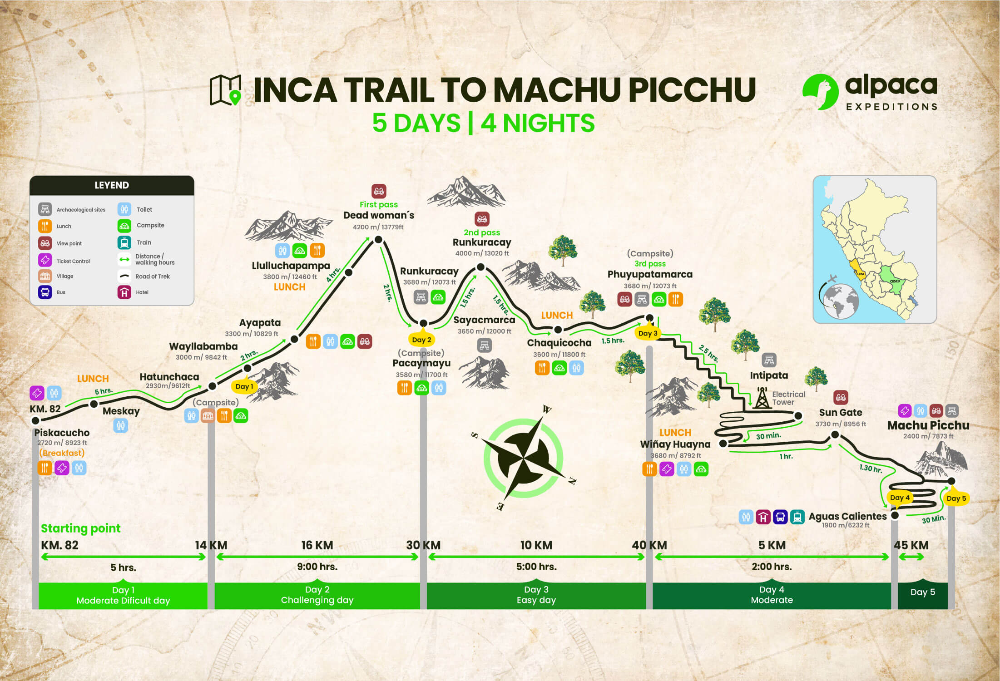
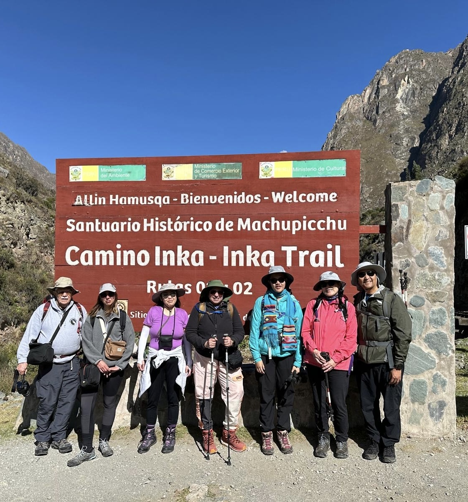

Inca Trail to Machu Picchu
Welcome to my review of the Inca Trail in Peru.
This was my highlight of my vacation back in June. I actually did a project with a section about this part last year. This trail was a whole journey that changed my life. It made me realize how grateful I am for everything I have. Click on the links above to see different parts of my review which consists of my experience, the people, and the food.
The Actual Hike
I did the 5 days and 4 nights version of the trail. My family did this hike through a company called
"Alpaca Expeditions"
which is the largest company that does tours in the Inca Trail and other places like "Rainbow Mountain"
This is the traditional route to go to Machu Picchu. There are many ruins and plantations along the way.
The altitude is 13,828 feet which could often leave people dropping out of the hike due to altitude sickness.
Here is an image of the trail.
The Journey
We first began the hike which was not too difficult. We actually had cell service for the first half of the day. One person actually had to turn around because he was unable to acclimate before going on this hike. Once we arrived at the campsite, the porters were settings up the tents for us. There were no showers we were in a village so there were still proper toilets. The next day was the hardest day of the hike. We were about to go through Dead Woman's Pass. The elevation goes up to 13,828 feet above sea level. It was very difficult but my family made it. Day 3 was rough on the knees and felt that there was no ending to the campsite. Day 4 was the last day of the hike. We saw the Sun Gate which we saw the glimpse of Machu Picchu. Day 5 was the tour in Machu Picchu.
People
My Group
I loved the group that I was in. They were all very nice and there were no showoffs. We all became friends in the end after this hike.
Here are the names of the people from left to right.
- Norman, a gentleman from Virginia
- Gabby, a student from France
- Linda and Akash, the two besties from California
- Me and my parents
The men in green are the Porters.
They help out with:
- Carrying your belongings with their stuff
- Setting up your tents
- Cooking the food
The porters were born in the villages in the mountains. Their main language is Quechua and they do not speak Spanish or English.
They all range from a 20 year old to a 61 year old in my group.
Food
The food was delicious and very nutritious.
The food was cooked by the head chef. One person was vegan and another one was vegetarian.
The chef would accomodate them with those needs.
We also had coca tea every morning which helps with
altitude sickness.
Here are some of the pictures of the food:
Most of these dishes were either lunch or dinner.